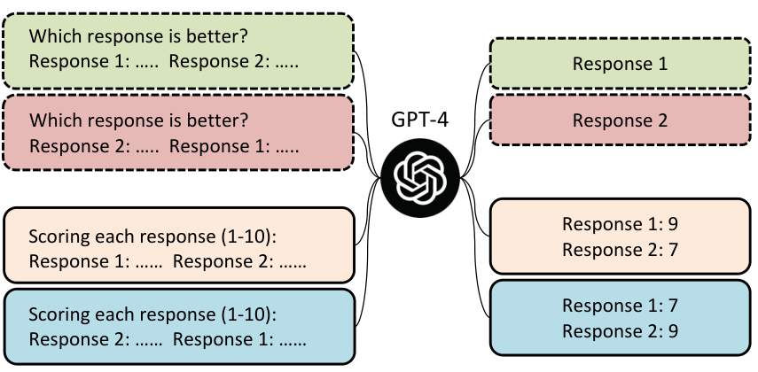
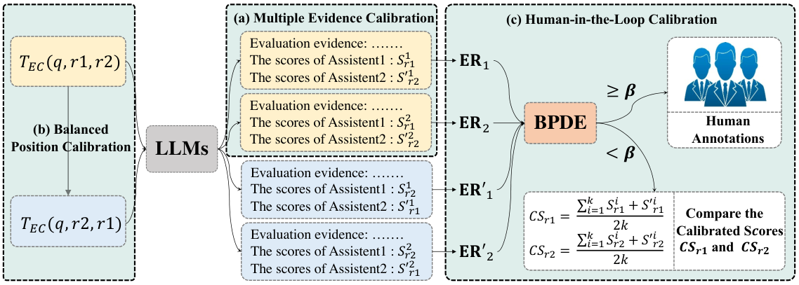

In this paper, we uncover a systematic bias in the evaluation paradigm of adopting large language models (LLMs), e.g., GPT-4, as a referee to score and compare the quality of responses generated by candidate models. We find that the quality ranking of candidate responses can be easily hacked by simply altering their order of appearance in the context. This manipulation allows us to skew the evaluation result, making one model appear considerably superior to the other, e.g., Vicuna-13B could beat ChatGPT on 66 over 80 tested queries with ChatGPT as an evaluator. To address this issue, we propose a calibration framework with three simple yet effective strategies: 1) Multiple Evidence Calibration, which requires the evaluator model to generate multiple evaluation evidence before assigning ratings; 2) Balanced Position Calibration, which aggregates results across various orders to determine the final score; 3) Human-in-the-Loop Calibration, which introduces a balanced position diversity entropy to measure the difficulty of each example and seeks human assistance when needed. We also manually annotate the “win/tie/lose” outcomes of responses from ChatGPT and Vicuna-13B in the Vicuna Benchmark’s question prompt, and extensive experiments demonstrate that our approach successfully mitigates evaluation bias, resulting in closer alignment with human judgments. We release our code and human annotation at https://github.com/i-Eval/FairEval to facilitate future research.
The rapid advancement of Large Language Models (LLMs) (Brown et al., 2020; Chowdhery et al., 2022) has underscored the importance of evaluating their alignment with human intent in generated responses, making it an active field of research. Traditional n-gram metrics like BLEU Papineni et al. (2002) and ROUGE Lin (2004), as well as more sophisticated model-based evaluations such as BERTScore Zhang et al. (2020) and BARTScore Yuan, Neubig, and Liu (2021), are insufficient for thoroughly assessing this alignment He et al. (2023). While human evaluation provides the most accurate measure of model performance and valuable insights, it can often be costly and time-consuming. As a result, there is a growing demand for automated assessment methods that can consistently align with human judgments while being more efficient and cost-effective.

ChatGPT (OpenAI, 2022) and GPT-4 OpenAI (2023) have recently demonstrated remarkable performance across various tasks, leading to their widespread use as both the annotators Peng et al. (2023); Xu et al. (2023) and evaluators Zheng et al. (2023); Peng et al. (2023); Sun et al. (2023); Zhou et al. (2023); Gao et al. (2023); Wang et al. (2023b); Dubois et al. (2023); Wang et al. (2023a). For example, The evaluation pipeline of Vicuna Zheng et al. (2023) has gained significant interest and wide usage due to its simplicity and interpretability. It prompts GPT-4 to score and compare candidate responses and provide explanations, making it a valuable tool for evaluation. However, it is unclear how reliable LLMs are as evaluators, as they are known to be sensitive to textual instructions and inputs Dong et al. (2022); Turpin et al. (2023); Bowman (2023). This raises questions about the resilience of this paradigm against perturbations, such as the ordering of candidates during scoring, potentially becoming the Achilles’ Heel that can be easily hacked for unreliable evaluations.
In this paper, we take a sober look at the LLMs-as-evaluator paradigm and uncover a significant positional bias. Specifically, we demonstrate that GPT-4 exhibits a preference for the first displayed candidate response by consistently assigning it higher scores, even when the order of candidates is subtly altered. As illustrated in Figure 1, merely swapping the presentation order can reverse evaluation outcomes. This bias is also present in ChatGPT, which typically favors the second response. These findings highlight previously overlooked limitations in the current evaluation paradigm.
To address this issue, we propose three simple yet effective strategies to calibrate positional bias: 1) Multiple Evidence Calibration (MEC): We prompt the model to generate evaluation evidence before assigning scores, leveraging the inherent properties of causal language models for calibration. We also employ ensemble techniques to incorporate multiple evidence calibration results to further stabilize the evaluation. 2) Balanced Position Calibration (BPC): To further reduce positional bias, we evaluate each candidate in both positions across two runs and compute the final score as the average of the two runs. 3) Human In The Loop Calibration (HITLC): We also explore human-in-the-loop evaluation and consider a diversity-based method to get a cue to indicate biased candidates based on the evaluation results of MEC and BPC.
To assess the efficacy of our methods, we manually annotate the “win/tie/lose” outcomes of responses from ChatGPT and Vicuna-13B in the Vicuna benchmark Zheng et al. (2023), encompassing questions spanning distinct question categories. Our MEC and BPC enhance the evaluation alignment of GPT-4 and ChatGPT by % and % accuracy, respectively. Moreover, based on MEC and BPC, our HITLC can further effectively integrate human assistance into the evaluation process. Specifically, with only a % human annotation cost, GPT-4 and ChatGPT can achieve comparable or even better annotation alignment with the average human performance, reducing the annotation cost by up to %.
In summary, our key contributions are: 1) We reveal that LLMs exhibit severe positional bias, compromising their fairness as evaluators; 2) We develop a calibration framework with three simple yet effective strategies to calibrate the positional bias of LLMs; 3) We manually annotate the “win/tie/lose” outcomes of responses from ChatGPT and Vicuna-13B in the Vicuna benchmark and demonstrate the effectiveness of our proposed approach through experimental results, which show closer alignment with human judgments.
| Evaluators | Vicuna-13B v.s. Other Models | Vicuna-13B Win Rate | Conflict Rate | |
|---|---|---|---|---|
| as Assistant1 | as Assistant2 | |||
| GPT-4 | Vicuna-13B v.s. ChatGPT | 51.3% | 23.8% | 37 / 80 (46.3%) |
| GPT-4 | Vicuna-13B v.s. Alpaca-13B | 92.5% | 92.5% | 4 / 80 (5.0%) |
| ChatGPT | Vicuna-13B v.s. ChatGPT | 2.5% | 82.5% | 66 / 80 (82.5%) |
| ChatGPT | Vicuna-13B v.s. Alpaca-13B | 37.5% | 90% | 42 / 80 (52.5%) |
Recently, researchers have been utilizing LLMs such as GPT-4 as evaluators to compare the performance of two AI assistants. As shown in Table 1, an evaluation template with three placeholders , is used to query the LLM for evaluation. For each testing question , given two responses and from Assistant 1 and Assistant 2, respectively, the researchers populate these responses into the corresponding slots of the evaluation template to form a prompt: The prompt is then used to query the LLM in order to obtain the comparison result. In this paper, we found that LLM suffers from severe positional bias, i.e., by swapping the slots of the two responses and querying LLM twice, the evaluator will most likely produce conflicting evaluation results, and the evaluator prefers the response at a certain position.
In this section, we adopt GPT-4 and ChatGPT as evaluators to analyze the characteristics of positional bias in LLM evaluators. We find that:
As shown in Table 2, in the evaluation of “Vicuna-13B v.s. ChatGPT” and “Vicuna-13B v.s. Alpaca-13B”, when the order was changed, LLMs provide different evaluation results, e.g., the win rate of Vicuna-13B extremely differs when Vicuna-13B is evaluated as Assistant 1 and Assistant 2.
To empirically evaluate the sensitivity, we introduced a metric to measure the sensitivity of the model to response positions quantitatively. Formally, given examples , for each example , we query the LLM with two prompts and , and obtain corresponding two evaluation results and . Then we calculate the Conflict Rate of the LLM evaluator as follows:
| (1) |
where is the indicator function. We found that GPT-4 exhibited conflict rates of 46.3% and 5.0%, respectively. In contrast, ChatGPT displayed considerably higher conflict rates, with figures of 82.5% and 52.5%, respectively. These findings indicate that LLMs can be self-conflicting due to the sensitivity of the response order in the template, with stronger models being less influenced by the placement of responses.
Based on the same evaluation template in Table 1, GPT-4 tends to favor the response in the first position, while ChatGPT shows a preference for the response in the second position. For example, as illustrated in Table 2, in the comparison “Vicuna-13B v.s. ChatGPT”, GPT-4 yields Win Rates of % and % for Vicuna-13B when it is positioned as Assistant 1 and Assistant 2, respectively. Conversely, ChatGPT indicates Win Rates of only % and up to % for Vicuna-13B when it is positioned as Assistant 1 and Assistant 2, respectively.

We notice that the conflict rate of “Vicuna-13B v.s. Alpaca-13B” is much lower than that of “Vicuna-13B v.s. ChatGPT”, suggesting that positional bias may not have the same impact on the assessment of different responses. One potential reason is that there is a significant difference in the quality of responses between Alpaca models and Vicuna models, and positional bias is not strong enough to change the judgment in such a situation. To further investigate this issue, we grouped all the examples based on the score difference between the two responses. As shown in Figure 2, we found that when the score difference between the two responses is small (e.g., score gap 1), the evaluation results of GPT-4 are significantly affected by the position of the responses. On the other hand, when the score difference between the two responses is large (e.g., score gap 3), GPT-4’s evaluation results are relatively stable.
We have identified that positional bias can significantly impact the evaluation results of LLMs, making them unfair evaluators. In this section, we propose a calibration framework with three simple yet effective strategies to alleviate this bias to achieve a more reliable and fair evaluation result.
Previous studies Zheng et al. (2023); Wang et al. (2023b) utilize the evaluation template that draws the conclusion first and then makes an explanation, e.g., the template used in Table 1. However, due to the nature of the auto-regressive model, the conclusions generated by the model are not supported by the explanation generated afterward. To this end, as shown in Table 3, we design an evidence calibration (EC) evaluation template that requires the model to generate the explanation (evaluation evidence) first and then give the score. In this way, the score can be calibrated with the evaluation evidence. To further improve the reliability of the evaluation, rather than generating only a single EC score for each response, we perform a multiple evidence calibration (MEC, Figure 3(a)) that samples EC scores and for responses and , where and denotes scores of the response at the first and second positions, respectively.
We further employ a balanced position calibration (BPC) strategy to alleviate the previously identified positional bias of LLMs. As shown in Figure 3(b), for each example , BPC additionally creates a query prompt by swapping the position of two responses in the original query prompt . Combined with MEC, we can achieve scores and for and , respectively. The final calibrated scores of two responses ( and ) are the average of the scores:
| (2) |
and we regard the response with the higher average score as the better response.
| Evaluators | Methods | Accuracy | Kappa | Cost |
|---|---|---|---|---|
| Human 1 | - | 68.8% | 0.50 | $30.0 |
| Human 2 | - | 76.3% | 0.62 | $30.0 |
| Human 3 | - | 70.0% | 0.50 | $30.0 |
| Human Average | - | 71.7% | 0.54 | $30.0 |
| GPT-4 | Vanilla | 52.7% | 0.24 | $2.00 |
| GPT-4 | EC () | 56.5% | 0.29 | $2.00 |
| GPT-4 | MEC () | 58.7% | 0.30 | $3.19 |
| GPT-4 | MEC () | 60.9% | 0.33 | $6.38 |
| GPT-4 | MEC () + BPC () | 62.5% | 0.37 | $6.38 |
| GPT-4 | MEC () + BPC () + HITLC () | 73.8% | 0.56 | $23.1 |
| ChatGPT | Vanilla | 44.4% | 0.06 | $0.10 |
| ChatGPT | EC () | 52.6% | 0.23 | $0.10 |
| ChatGPT | MEC () | 53.2% | 0.24 | $0.17 |
| ChatGPT | MEC () | 55.6% | 0.27 | $0.34 |
| ChatGPT | MEC () + BPC () | 58.7% | 0.31 | $0.34 |
| ChatGPT | MEC () + BPC () + HITLC () | 71.3% | 0.52 | $18.3 |
In addition to the automatic calibration strategies, another interesting question we want to explore is whether Human-In-The-Loop Calibration (HITLC) which performs the cooperation of humans and LLMs as evaluators, could stabilize the evaluation result. The key point of human-in-the-loop calibration is when humans should be involved in the evaluation and calibrate the evaluation result on which LLM evaluators do not perform well.
To target the “when” problem, inspired by Cai, Chang, and Han (2023), we introduce a Balanced Position Diversity Entropy (BPDE) score to find examples requiring auxiliary human calibration based on the evaluation results of MEC and BPC. Specifically, as shown in Figure 3(c), we first compute evaluation results based on the pairs of scores.
| (3) |
and BPDE is defined as the entropy of the evaluation results:
| (4) |
| (5) |
A higher BPDE score indicates that it is more likely the evaluation requires manual correction. A threshold is needed for BPDE as the hyper-parameter to select the top- most likely biased evaluations. After selection based on the BPDE score, the annotators will evaluate the selected examples and integrate the human annotations based on the majority opinion as described in Section 4.1.
To assess the effectiveness of our proposed strategies, three of the authors manually annotate the “win/tie/lose” outcomes of responses from ChatGPT and Vicuna-13B independently in all 80 Vicuna Benchmark questions. All of the annotators are researchers familiar with Artificial Intelligence and are well-equipped to assess the quality of the responses. Following the same template as the original Vicuna, the annotators are instructed to assess the responses provided by Vicuna-13B and ChatGPT from four different perspectives: helpfulness, relevance, accuracy, and level of detail. The responses of Vicuna and ChatGPT are presented to the annotators in random order. The evaluation process for each example took an average of three minutes. The final result is based on the majority opinion among three annotators.
We use the OpenAI API to conduct our experiments (“gpt-3.5-turbo-0301” for ChatGPT, and “gpt-4” for GPT-4). For the methods that do not need to sample multiple generation results, we set the generated temperature to for deterministic generation results. For the multiple evidence strategy, we set the temperature to and sample three generation results (). We use the accuracy and kappa correlation coefficient McHugh (2012) with the final majority of human annotation results to measure the performance of different evaluators and evaluation methods. When calculating the results for methods that do not utilize BPC, we randomize the order of the two responses from the assistants and calculate the average results of 100 runs to ensure stable results.
Table 4 illustrates the performance of different methods on our manually annotated annotated examples. As is shown: 1) There is a good correlation coefficient between the annotations provided by each human annotator and the final voting results. In detail, the average accuracy and the kappa correlation coefficient of human annotations are % and , respectively; 2) Overall, GPT-4 achieves higher alignment with human judgments compared with ChatGPT, showing its powerful alignment ability with humans; 3) Compared to the commonly used Vanilla evaluation method, our proposed automatic calibration strategies (i.e., EC, MEC and BPC) significantly enhance the alignment between GPT-4 and ChatGPT with human judgments; For instance, by employing the MEC and BPC calibration strategies, ChatGPT demonstrates a notable improvement in both accuracy and the kappa correlation coefficient. Specifically, the accuracy is improved by 14.3%, and the kappa correlation coefficient is increased from to ; 4) “MEC () + BPC ()” outperforms “MEC ()”, demonstrating that LLMs are affected by positional bias, and BPC effectively ensures that LLMs serve as fair evaluators; 5) Our proposed HITLC can effectively enhance the alignment between GPT-4 and ChatGPT with human judgments, requiring only a small amount of human labor. For example, by incorporating just 20% () human assistance, ChatGPT attains comparable Human Average accuracy, while reducing the annotation cost from to , a reduction.11 1 The minimum hourly wage in the United States is near , which can be found at https://www.worker.gov/. On average, annotating an example takes 3 minutes, and the Vicuna evaluation benchmark comprises examples in total. Consequently, the cost per annotator amounts to .
In conclusion, our proposed calibration methods are simple yet very effective in improving the evaluation performance with LLM as evaluators, while maintaining low costs.
In the MEC and BPC strategy, we sample evaluation results for each query prompt and ensemble them to enhance the evaluation process. We conduct an analysis to examine the influence of the number of evidence , on the model’s evaluation performance. As illustrated in Figure 4(a), we compared the performance of ChatGPT with different values of , namely 1, 3, 5, and 7. The model’s performance increases and then tends to be constant or decreases slightly as becomes larger. Despite the slight decrease, the enhancement of the model effect by the MCE strategy is still significant, illustrating the stability of the MEC strategy. Consequently, we found that a value of yields an optimal performance. With this value, the model achieves a notable level of performance while keeping the API cost relatively low.
We further investigate the impact of sampling temperature on evaluation performance. Figure 4(b) illustrates that both low temperature (i.e., ) and high temperature (i.e., ) result in sub-optimal evaluation alignment. We believe that low temperature eliminates the randomness of sampling, weakening the effect of MEC, while high temperature compromises the quality of generation results, leading to poor performance. Hence, it is crucial to select an appropriate temperature (e.g., or in our experiments) for the LLM evaluators.
Our HITLC strategy utilizes BPDE score to select examples for human annotations. In order to analyze the efficiency of BPDE score, we compare BPDE with two typical baselines, Random and Vanilla Diversity Entropy, where Random denotes randomly select examples for human annotations, and Vanilla Diversity Entropy is calculated by using only the evaluation results of one position without swapping the position of two responses. To ensure fairness, the total number of evaluation results is for both BPDE and Vanilla Diversity Entropy. As shown in Figure 5: 1) Two Diversity Entropy methods outperform Random, showing the effectiveness of selecting examples based on the diversity entropy; 2) BPDE outperforms Vanilla DE, which shows LLMs are sensitive to position exchange, and the results of BPC can significantly improve the performance of HITLC compared to relying solely on the results of MEC.
| Templates | Methods | Acc. | Kap. | C.R |
|---|---|---|---|---|
| Scoring | Vanilla | 44.4% | 0.06 | 82.5% |
| Scoring | MEC | 53.2% | 0.24 | 35.0% |
| Scoring | MEC + BPC | 58.7% | 0.31 | N/A |
| Comparing | Vanilla | 50.2% | 0.18 | 50.0% |
| Comparing | MEC | 54.8% | 0.27 | 42.5% |
| Comparing | MEC + BPC | 60.3% | 0.35 | N/A |
To provide a more comprehensive validation of our proposed calibration methods, in addition to the previous Scoring evaluation template that rates each response, we extend our analysis to incorporate the Comparing evaluation template. This template facilitates a direct comparison between two responses, eschewing explicit scores in its assessment. Specifically, we prompt LLMs to produce results labeled as “Assistant 1”, “Assistant 2”, or “Same”, indicating whether the response from Assistant 1 is better, worse, or equal to that of Assistant 2. As is shown in Table 5: 1) Our proposed methods are applicable to both of these templates, leading to enhanced accuracy and a heightened correlation coefficient for ChatGPT; 2) The significant performance gap (nearly 6% accuracy) between the Vanilla method of two templates, coupled with the high conflict rate, highlights the sensitivity and unreliability of LLMs. However, our methods effectively narrow this performance gap and reduce conflict, showcasing how calibration enhances LLM robustness.
In order to further analyze the evaluation capabilities of the model, we perform a fine-grained analysis of the questions by dividing them into categories following Zheng et al. (2023). We calculate the performance of different evaluators within these categories. As shown in Figure 6, we find that: 1) In certain complex tasks such as common-sense, coding and math, GPT-4 performs significantly better than ChatGPT, highlighting the strength of GPT-4 as a more fair evaluator in these scenarios; 2) Our proposed MEC+BPC strategy demonstrates noticeable improvement in evaluating ChatGPT’s performance on complex tasks, allowing us to obtain satisfactory evaluation results with a low API cost.
LLMs have demonstrated powerful general generation capabilities, becoming universal assistants OpenAI (2022); OpenAI (2023); Song et al. (2023b). With the rapid advancement of LLMs, it becomes crucial to evaluate their ability to follow human instructions. Traditional evaluation methods assess the ability by calculating a metric, like BLEU, ROUGE, BERTScore, or BARTScore, to compare the generated response with a reference response. However, these metrics do not adequately measure the alignment of the generated response with human intent He et al. (2023). While human evaluation is treated as the most accurate measurement of model performance, it is costly and time-consuming to operate at scales. Considering the potent capabilities of LLMs, researchers have started utilizing LLMs to evaluate the proficiency of generative models in adhering to human instructions Zheng et al. (2023); Lu et al. (2023); Li et al. (2023). In these works, Vicuna’s evaluation paradigm Zheng et al. (2023) is widely adopted, where it provides a question and two responses from two models, and uses GPT-4 to determine which response has better quality.
Deep Neural Networks have been proven to easily learn biases from the data, which significantly impacts their reliability. Specifically, bias has also been investigated in natural language inference (Gururangan et al., 2018; McCoy, Pavlick, and Linzen, 2019; Belinkov et al., 2019; Liu et al., 2020a; Liu et al., 2020b), question answering (Min et al., 2019), ROC story cloze (Cai, Tu, and Gimpel, 2017; Schwartz et al., 2017), lexical inference Levy et al. (2015), visual question answering Goyal et al. (2017), information extraction Wang et al. (2021); Wang et al. (2022); Song et al. (2023a); Xia et al. (2023) and so on. LLMs are pre-trained using a vast amount of data from the internet, making it highly likely for them to learn biases present in those materials. Although the LLMs are already widely adopted as a proxy of human evaluators, the reliability of this paradigm is not well explored. In this paper, we critically examine the LLMs-as-evaluator paradigm and uncover a significant positional bias. Furthermore, we propose three simple yet effective methods to calibrate the positional bias to achieve reliable and fair evaluation results.
In this paper, we reveal a systematic positional bias in evaluation with advanced ChatGPT/GPT-4 models: by manipulating the order of candidate responses during evaluation, the quality ranking results can be significantly influenced. To this end, we introduce three effective strategies, namely Multiple Evidence Calibration (MEC), Balanced Position Calibration (BPC), and Human-in-the-Loop Calibration (HITLC). MEC requires the LLM evaluator to first provide multiple evaluation evidence to support their subsequent ratings and BPC aggregates the results from various orders to determine the final score. Based on the results of MEC and BPC, HITLC further calculates a balanced position diversity entropy to select examples for human annotations. These strategies successfully reduce the evaluation bias and improve alignment with human judgments. We provide our code and human annotations to support future studies and enhance the evaluation of generative models.